All Data regarding Kagurabachi can be found here..
//this section will be a timer that countdowns when the next chapter is releasing, at the time of coding this we just got notice that the manga will be on break for some weeks T-T
NEXT CHAPTER RELEASES
//holds all the information for the clock
00Days
00Hours
00Minutes
00Seconds
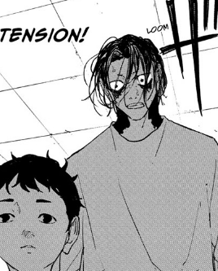
//im making this section for character info also want to try out this new layout format i saw but twist it in my way.
CHARACTER DATA
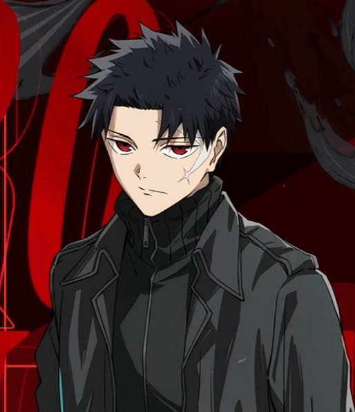
Chihiro Rokuhira
The protagonist character of Kagurabachi, he is the son of Kunishige Rokuhira and Chiaki Soga.
After his father was murdered, he set out on a mission to retrieve the Enchanted Blades and defeating
the Hishaku, the ones responsible for his death.
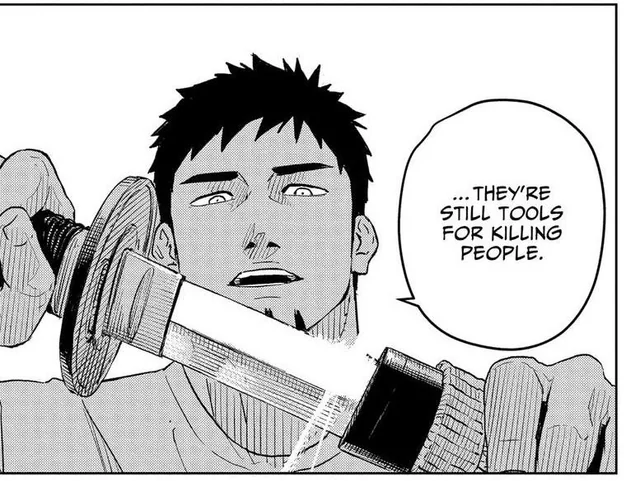
Kunishige Rokuhira
The father of Chihiro Rokuhira, he is regarded as the hero who ended the Seitei War, a great conflict
between Japan and a forgotten clan, the Mikaboshi. He is the creator of the enchanted blades and was murdered
by the Hishaku.
Togo Shiba
Best friend of Kunishige and current guardian of Chihiro Rokuhira, Togo Shiba has now dedicated himself to helping Chihiro
on his quest to recover the enchanted blades.
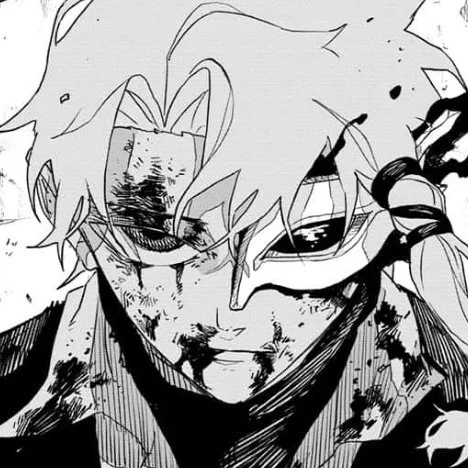
Hakuri Sazanami
Hakuri is the son of Kiyora Sazanami and current wielder of their special ability, while he was growing up he was seen
as nothing but a failure and abused by his older brother and discouraged by his family. He found his worth and friendship aftet meeting
Chihiro and he continues to help him.
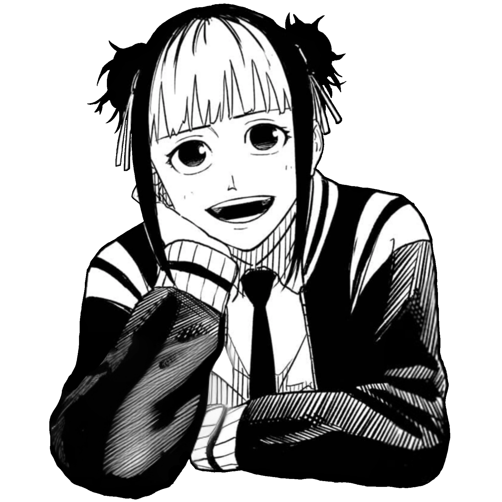
Hinao
Hinao is the owner of Cafe Haru Haru, which is used to give sorcerers business from employers. She heavily assists
Chihiro and Shiba with information when needed.
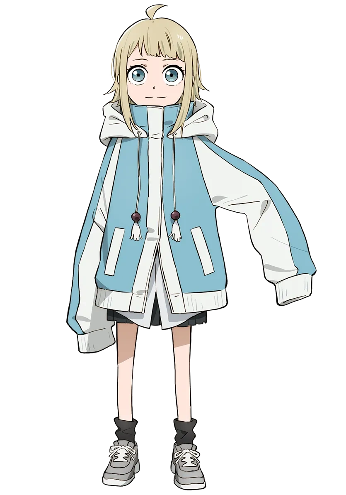
Char Kyonagi
An orphan and last remaining member of the Kyonagi clan, she like the others of her clan
possess the ability of powerful regeneration. Due to that, shes been abducted and almost experimented on
but thanks to Chihiro and the bonds she has formed, she is protected and seemingly happy.
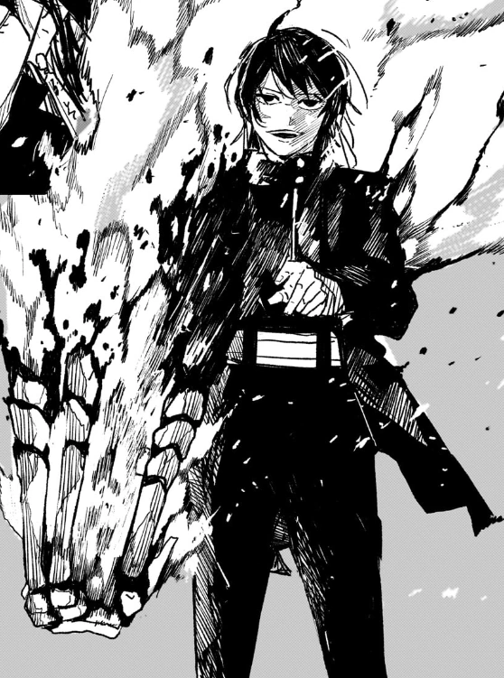
Hiyuki Kagari
The kamunabis strongest warrior and wielder of the Flame Bone of the Starving, a power that matches the enchanted blades.
While she is a nice and moral person who wants what's best for the people, when she has strong opponent her battle thirst
shows.
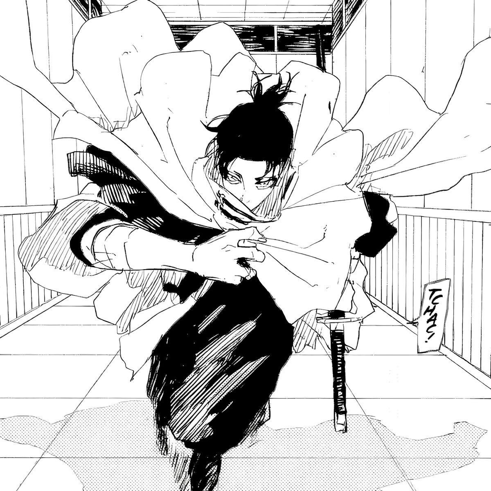
Yoji Uruha
The first sword bearer we meet, his is contract was with Enchanted Blade Kumeyuri.
He was selected at 18 and said to be a prodigy in his youth. He holds a great respect
for Kunishige Rokuhira and which he now shows through helping Chihiro.
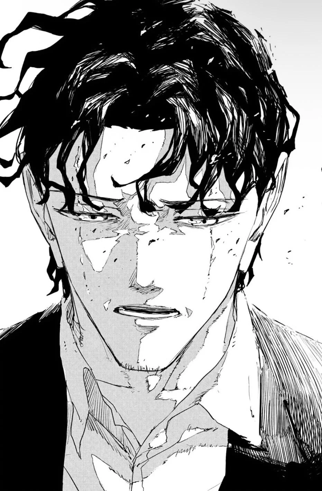
Seichi Samura
Wielder of the Enchanted Blade Tobimune, Seichi Samura was a master swordsman and father of
Iori Samura. He was one of the legendary heroes during the Seitei War although he holds deep regret
for everything that happen at the end of it. He wanted a peaceful life for his daughter and atonement for his
actions and that of the sword saint.
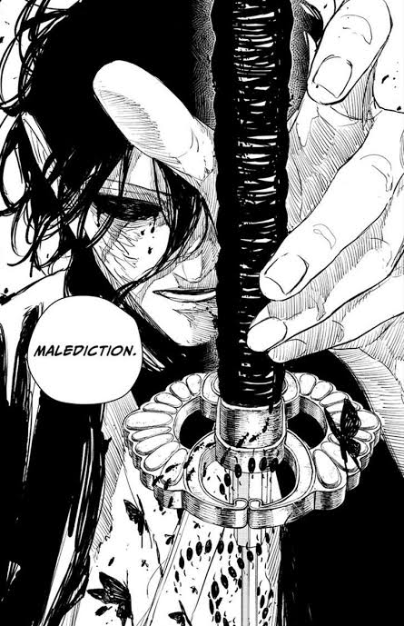
Akemura Soga
The legendary sword saint and wielder of the Magatsumi. Started a prodigy of the blade and one of
the turning points within the war, though after the war he would commit genocide on all the people of
Shokoku for currently unknown reasons. He is the brother of Chiakai Soga and brother-in-law of Kunishige
Rokuhira.
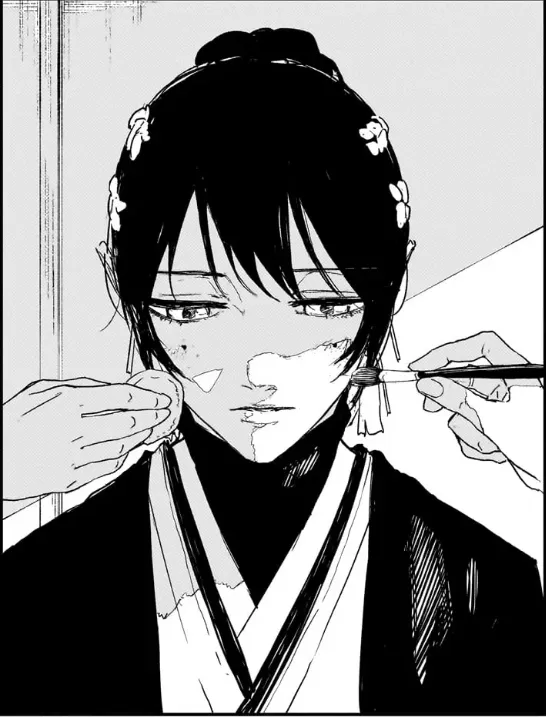
Chiaki Soga
As princess of the Soga clan, she wields the ability to gain prophecies. She is the sister of
Akemura Soga, wife of Kunishige Rokuhira, mother of Chihiro Rokuhira, best friends with Soshiro Azami and
Togo Shiba. Due to her ability, she was closed off from talking with her friends and became isolated and only
a tool for the Soga Clan.
Yura
A mysterious man who is the leader of the Hishaku, not much is known about his past or any of the Hishaku. He
conducted the plan of killing Kunishige Rokuhira and taking the Enchated Blades. Although not a fighter he is very quick witted
and nimble making him a difficult opponent. His goal as he states is "To bring order to this nation".
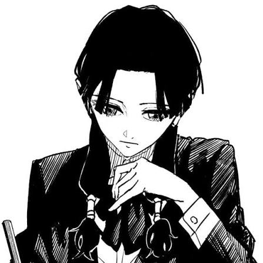
Iori Samura
Daughter of Seichi Samura, as a child she had her memories hidden by Samura and the Masumi for
her own protection and went on to live a normal life, until the Hishaku targeted her as a bargaining chip for her father.
She regained her memories and although she doesn't get to spend much time with her father after due to his demise at the hands of
Akemura Soga. The last thing she recieved was the Tobimune blade and she is now an ally to Chihiro.
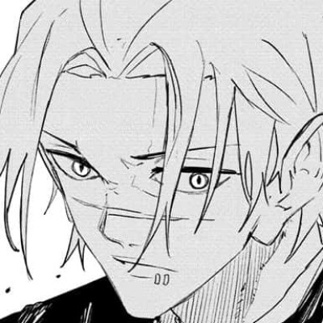
Natsuki Misaka
An incredible swordsman who is the brother of former wielder of Cloud Gouger,Ibuki Misaka.
He is a commander within the Kamunabi and RIVALS(one-sided) with Yoji Uruha, who was selected for an Enchated Blade
over him. He played a crucial role during the Hishaku invasion on Kamunabi HQ and remains an ally for the future.
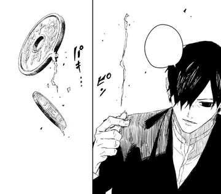
Soshiro Azami
One of the current leaders of the Kamunabi and childhood friends with
Togo Shiba and Kunishige Rokuhira, Azami currently helps Chihiro to the recover the blades
and continues to help him with any information he gathers while at the Kamunabi.
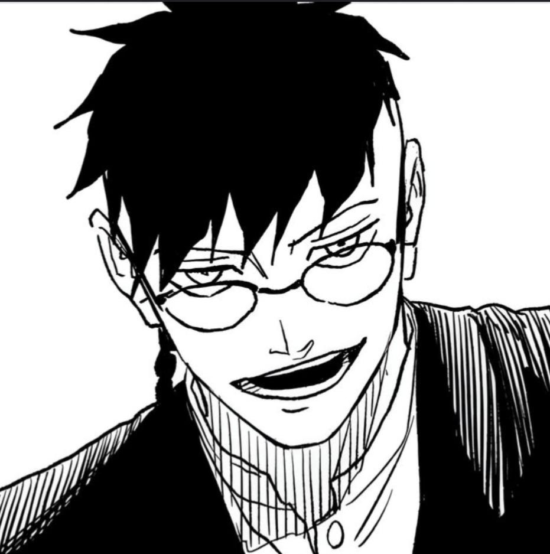
Ikuto Hagiwara
The leader of the Anti-Cloud Gouger squad who assisted Chihiro in his fight against Sojo, although most of his team dies
he lives and his mental state declines due to it. Even in his damage state he continues to help the Kamunabi when they are raided by the hishaku
showing he is a truly formidable leader.
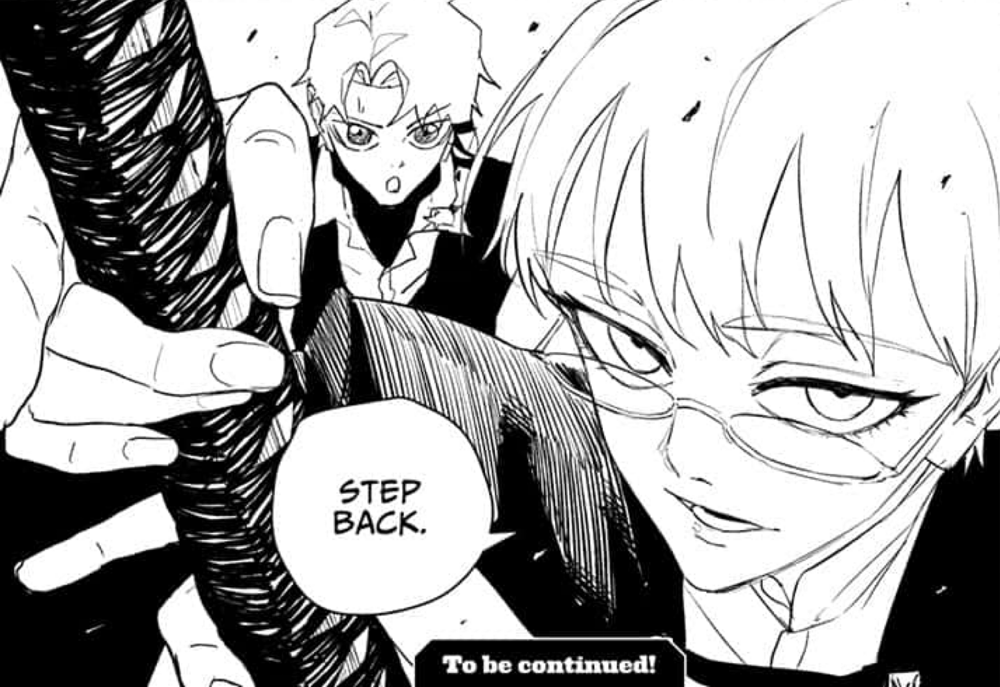
Kiri Shirikai
A skilled Kamunabi swordswoman who happens to be the granddaughter of the legendary master,
Itsuo Shirikai. She helps protect Hakuri during the invasion of the Hishaku where we learn her goal is to kill her
grandfather.
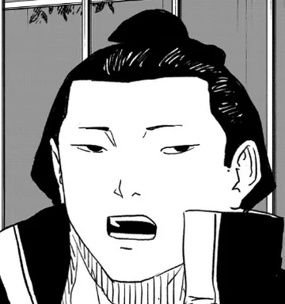
Tafuku Mihara
A kamunabi agent who accompanies Hiyuki Kagari on most of her missions. While she is
hot headed and full of energy, he seems to be laid back but does his job.
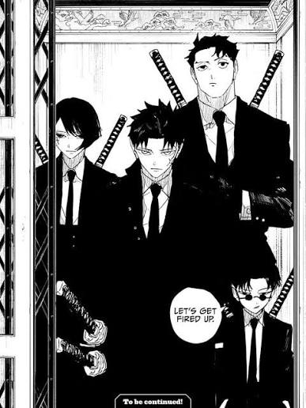
The Masumi
The Masumi are a lineage of ninja who help the kamunabi. We currently have seen 6 members, with the 3 current members being
assigned to protect Seichi Samura. Following his death they have now allied with Chihiro and Iori. The 3 members we have names for are
Ro, who happens to be the current clan head, Moku, and Sumi.
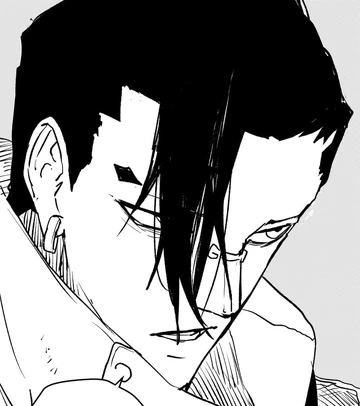
Kuguri
A kamunabi member who was tasked with kidnapping Iori. Hes a bloodthirsty guy who loves clashing blades
and holds swordsmanship to a high regard. Though he puts on a stoic face, he will forget the mission if it means a good battle.
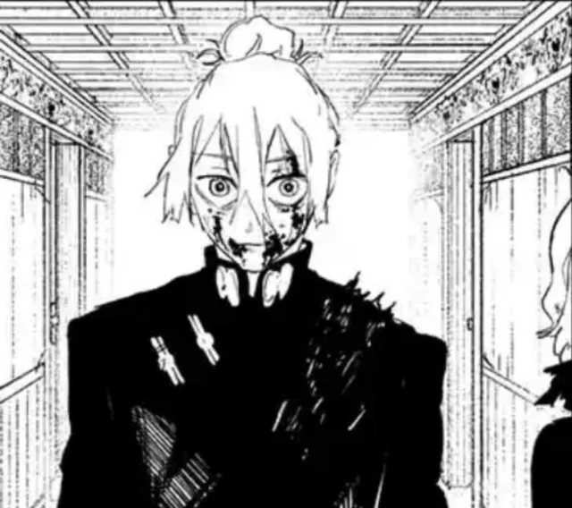
Hiruhiko
A member of the hishaku who is very playful and doesn't seem to take much serious unless its combat. While hes
very combat intelligent, he doesn't have much experience with people and is quite delusional of how things work as seen with his interaction with
Chihiro.
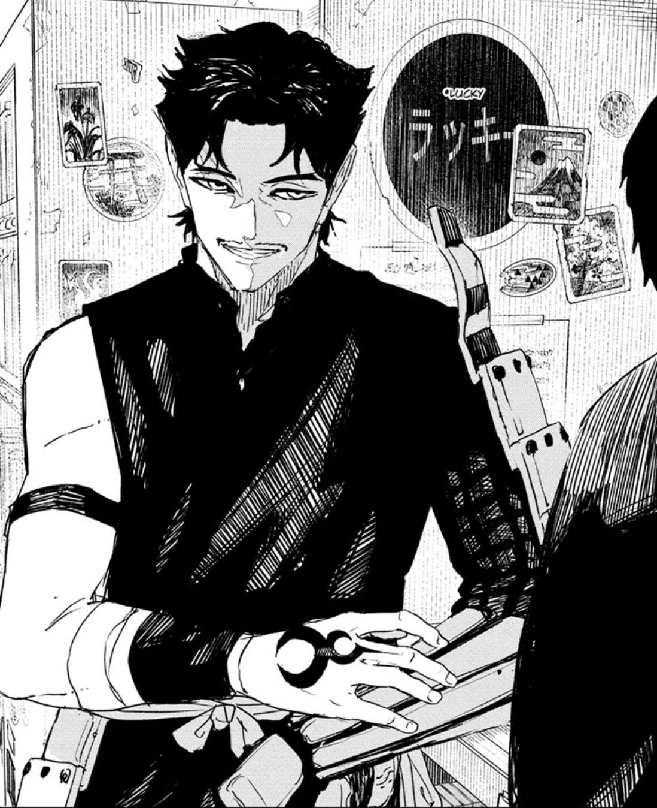
Hokuto
A member of the Hishaku. He is a very skilled swordsman and fighter even managing
to defeat former sword bearer Ibuki Misaka and claims to be the one who landed the finishing blow on Kunishige Rokuhira. While
watching his fights its clear he is very good with the sword and hes very obsessed with fighting strong opponents regardless of if
he is outmatched as seen when he learns Uruha is alive and his battle with him.
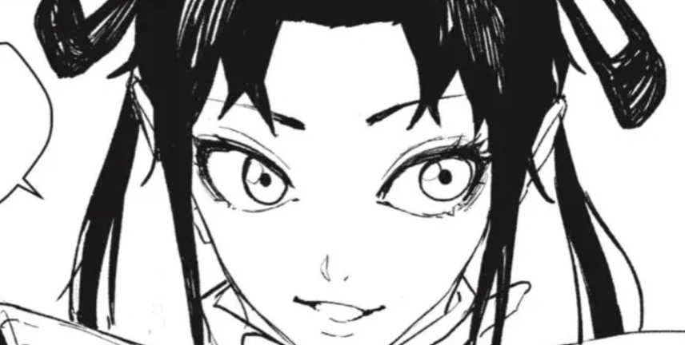
Uran
A Hishaku member who was among the 3 who murdered Kunishige Rokuhira. Like much of the other
Hishaku not much is known of her past. From what was seen in her, her sorcery is ice manipulation as she was seen freezing a
Kamunabi member completely. She also is very playful and seems to get along well with her fellow members.
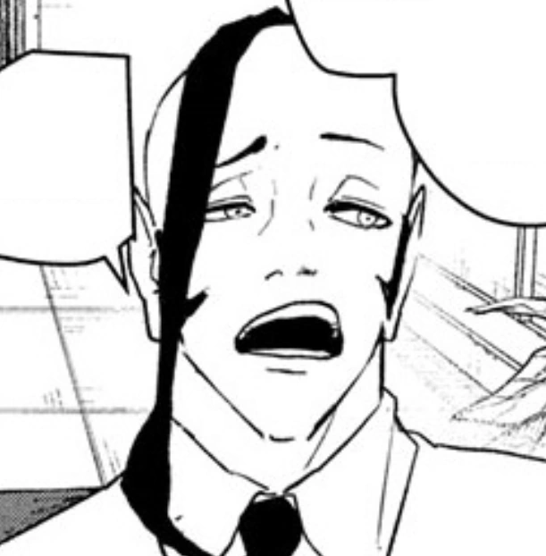
Bingo
Bingo is a member of the Hishaku. He is one of the main forces during the raid on
Kamunabi HQ. He seems to be a calm person and his sorcery is quite unique as he can transfom his head into
a lion dancer head. Like all Hishaku, none of his past is known.